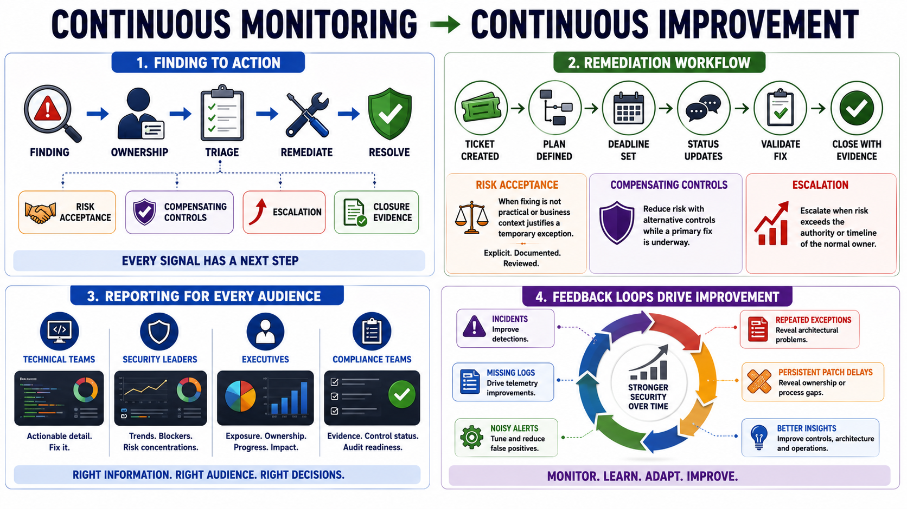

Remediation, Reporting, and Feedback Loops
Connecting to LMS... Progress: in progress

Narration
Continuous monitoring creates value when findings lead to action. A meaningful issue should connect to ownership, triage, remediation, risk acceptance, compensating controls, or escalation as appropriate. A report that describes risk without assigning next steps can create awareness but not improvement. The monitoring program should make it clear what happens after a signal is discovered.
Remediation workflows often use tickets, plans, deadlines, status updates, validation steps, and closure evidence. Risk acceptance may be appropriate when remediation is not practical or when business context justifies a temporary exception, but acceptance should be explicit and reviewed. Compensating controls may reduce risk while a primary fix is underway. Escalation should occur when risk exceeds the authority or timeline of the normal owner.
Reporting should serve multiple audiences. Technical teams need detail they can act on. Security leaders need trends, blockers, and risk concentrations. Executives need concise information about exposure, ownership, progress, and business impact. Compliance teams need evidence and control status. Good reporting does not overwhelm every audience with every detail; it translates monitoring data into the decisions each audience needs to make.
Feedback loops improve the program. Lessons learned from incidents can improve detections. Repeated exceptions can reveal architectural problems. Persistent patch delays can reveal ownership or process gaps. Noisy alerts can be tuned. Missing logs can drive telemetry improvements. Monitoring is not just a measurement activity; it is a learning system that should improve controls, detections, architecture, and operations over time.